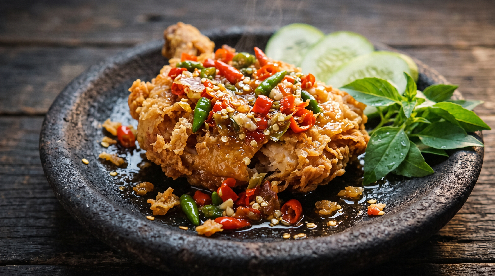
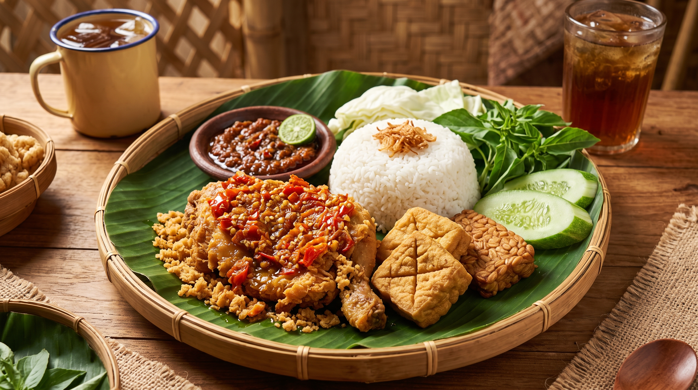
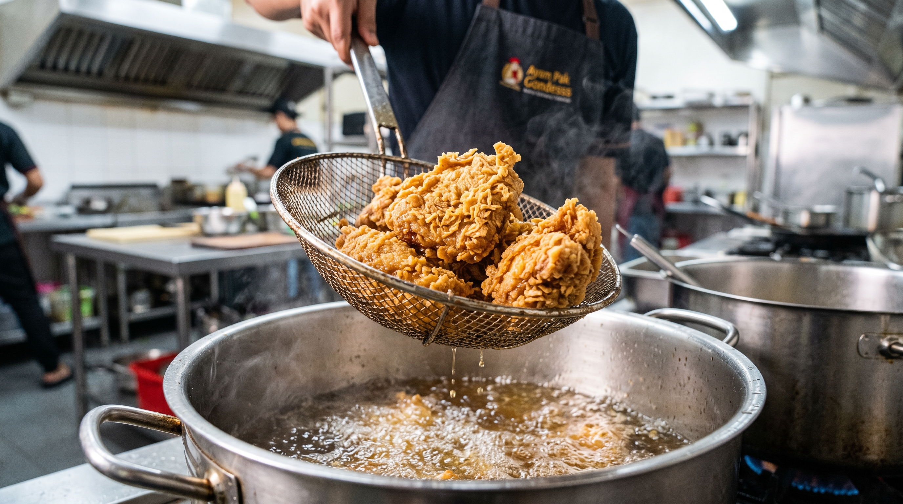
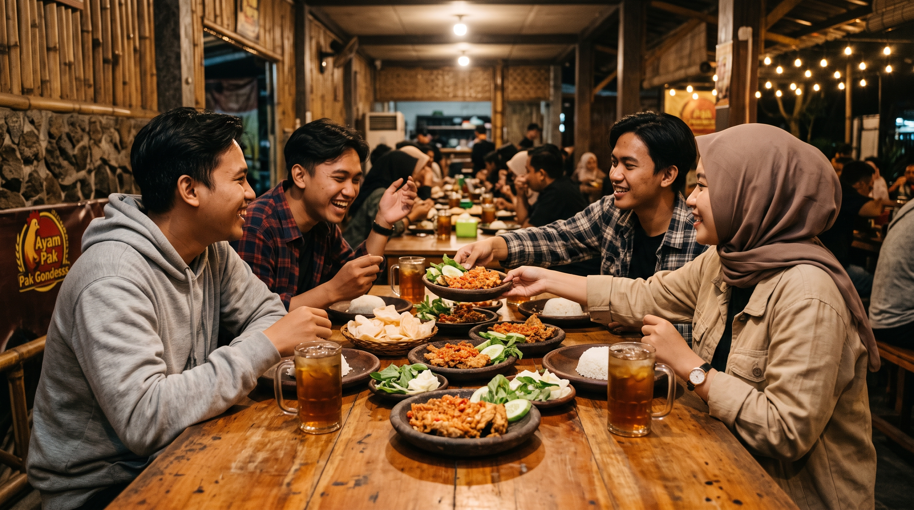
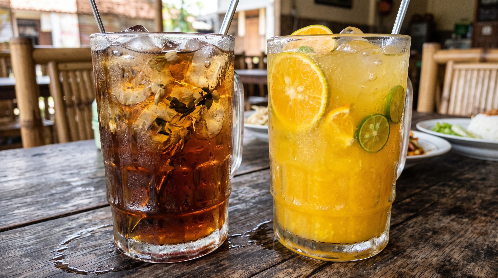

Bahan Baku Segar Setiap Pagi
Ayam dari pemotong higienis bersertifikasi halal. Cabai rawit merah, bawang merah Brebes, dan tomat segar dikirim dari pasar induk setiap subuh.
Kisah perjalanan kuliner ayam geprek & goreng khas Grogol yang digemari mahasiswa sejak 2018. Dari gerobak sederhana di Jalan Dr. Susilo Raya hingga titik kumpul santap favorit warga kampus dan perkantoran.
Berawal pada pertengahan 2018 di sudut ramai Jalan Dr. Susilo Raya, Pak Gondes merintis usaha kuliner dengan niat tulus: menyuguhkan olahan ayam yang mengenyangkan sekaligus meninggalkan rindu lewat bumbu ungkep rempah Nusantara dan sambal uleg segar.
Di tengah kawasan kampus Trisakti, Untar, dan UKRIDA, warung ini tumbuh bersama mahasiswa, dokter koas, dan para komuter Jakarta Barat.
"Makan enak itu hak semua orang. Di Ayam Pak Gondesss, mahasiswa dan warga sekitar bisa makan kenyang, pedas nikmat, dan tetap hemat!"Suryanto "Pak Gondes" - Pendiri & Peracik Resep Sambal
Komitmen harian demi menjaga kualitas rasa dan kepercayaan ribuan penikmat kuliner di Grogol.
Ayam dari pemotong higienis bersertifikasi halal. Cabai rawit merah, bawang merah Brebes, dan tomat segar dikirim dari pasar induk setiap subuh.
Resep sambal kampoeng Semarang dan Sambal Gondes dimasak dengan minyak kelapa panas. Ketumbar sangrai, lengkuas, dan serai meresap sampai ke tulang.
Paket hemat komplit: nasi pulen, lalapan melimpah, kremes kriuk, dan es teh jumbo dengan harga bersahabat bagi anak kos.
Didukung 12 staf dapur dan pramusaji terlatih, kami menjaga kecepatan hidangan di bawah 10 menit tanpa mengorbankan kualitas.
Cerita singkat perjalanan Ayam Pak Gondesss sejak 2018
Klik foto untuk memperbesar.

MENU IKONIKUlegan cabai segar dengan kepedasan level 1 sampai 10.

TRADISI TRADISIONALAlas daun pisang segar menambah aroma harum rempah nusantara.
Diuleg dadakan setiap pesanan demi kesegaran cita rasa.

DAPUR PANASKulit renyah keemasan dengan daging empuk juicy di dalam.

KELUARGA BESARTempat istirahat nyaman sehabis jam kuliah dan kerja.

PENAWAR PEDASTeh melati Jawa Tengah yang wangi dan pekat.
Jl. Dr. Susilo Raya No. 42, RT.02/RW.05, Kel. Grogol, Kec. Grogol Petamburan, Jakarta Barat 11450
3 menit jalan kaki dari Halte TransJakarta Grogol / Kampus Trisakti.
Senin - Minggu
10.00 - 22.00 WIB
Dine-in, Takeaway, GoFood, GrabFood & katering box.